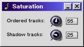

15. The Saturation Window

The Saturation window
This window is used to set the visibility of the ordered and shadow tracks in a track window. It can be accessed from the View->Saturation... menu item of any track window.
From the perspective of a track window, all tracks in the song fall into one of three categories:
- The primary track is the main track for the current track window. The window's title is the
primary track's name, and the primary track has a check mark next to it in the Tracks: menu button of the
track window.
- Ordered tracks are all tracks besides the primary that have been activated via the Tracks: menu
button. In place of a check mark, ordered tracks have a number, starting at 2, next to their name in the
Tracks: menu. A track is marked as ordered by selecting the appropriate number from its submenu.
- Shadow tracks are all other tracks in the song that are neither primary nor ordered.
The Ordered and Shadow knobs control the visibility of their respective track types. The further left, the more transparent the tracks. The further right, the more opaque. When the Ordered knob is completely right, the ordered tracks are indistinguishable from the primary track.